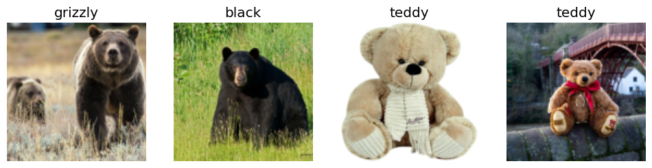
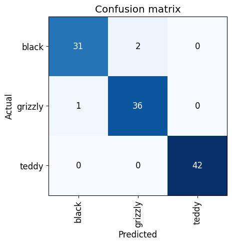
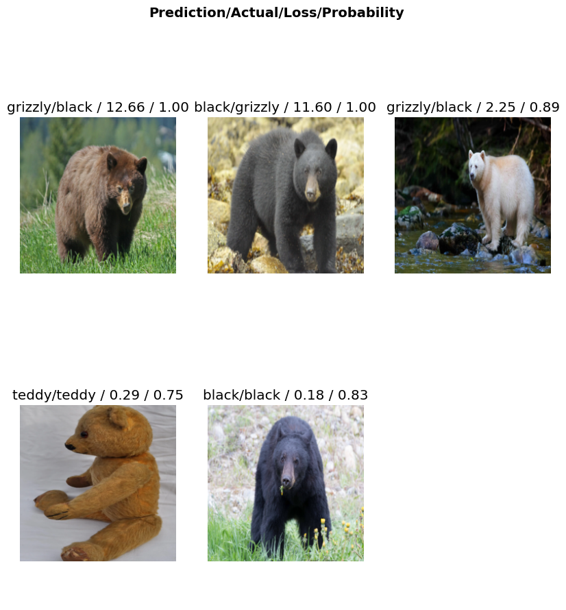

import fastbook
fastbook.setup_book()
from tqdm import tqdm
from fastbook import *
from fastai.vision.widgets import *Bear classifier
Using FastAI
Credits: Practical Deep Learning for Coders book by Jeremy Howard and Sylvain Gugger.
See a deployed app here.
There will be two parts to it: - first part generates a model - second part deploys it as an app on HuggingFace (see code)
results = search_images_ddg('grizzly bear')
ims = results.attrgot('contentUrl')
len(ims)200dest = 'bear_images/grizzly.jpg'
download_url(ims[0], dest)
100.99% [704512/697626 00:00<00:00]
Path('bear_images/grizzly.jpg')im = Image.open(dest)
im.to_thumb(128,128)bear_types = 'grizzly', 'black', 'teddy'
path = Path('bear_images')if not path.exists():
path.mkdir()for o in tqdm(bear_types):
dest = (path/o)
dest.mkdir(exist_ok=True)
results = search_images_ddg(f'{o} bear')
download_images(dest, urls=results)100%|██████████████████████████████████████████████████████████████████████████████████████████████████████████████████████████████████████████████████████████████████| 2/2 [00:50<00:00, 25.04s/it]fns = get_image_files(path)
fns(#578) [Path('bear_images/grizzly/e1a38b7a-5ad4-4070-b27d-7991e67ffbf1.jpg'),Path('bear_images/grizzly/8af6b4cd-7146-4401-8201-3c69b630bb9c.jpg'),Path('bear_images/grizzly/5afcf7a1-0ff0-4c7f-b012-fa5f2fea5a2c.jpg'),Path('bear_images/grizzly/0d7a2b60-9867-4a6f-a785-1b0877b5949a.jpg'),Path('bear_images/grizzly/7977441d-8f9e-4a87-9fc1-1bdaa54151c5.jpg'),Path('bear_images/grizzly/b2e96643-4ea1-49b6-bd77-dac698a9e333.jpg'),Path('bear_images/grizzly/c6be2eea-8fc4-4678-8b35-ba2b5ca20ea2.jpg'),Path('bear_images/grizzly/83500b29-961d-4273-8249-164e123232c7.jpg'),Path('bear_images/grizzly/96ad8b99-4570-4210-85f1-7a664efabe8a.jpg'),Path('bear_images/grizzly/6e24cf29-dae3-41d4-9152-afc34e622236.jpg')...]failed = verify_images(fns)
failed(#9) [Path('bear_images/grizzly/3216c80f-8f83-4bf9-84ff-811da170b8c7.jpg'),Path('bear_images/grizzly/7cd788f0-f6a4-495b-9745-5a4972c1b9de.jpg'),Path('bear_images/black/165f5c5c-d9c9-4113-b863-1e62ef2ce219.jpg'),Path('bear_images/black/7b7e11b1-a71a-4e93-b10f-7b6d72d62330.jpg'),Path('bear_images/black/70d2b973-2b84-464d-b9d9-f077af0f7451.jpg'),Path('bear_images/black/268676a1-dd6c-4cd8-b15c-cb999a38e857.jpg'),Path('bear_images/black/a22e8eee-25c0-4e0f-b954-768d2be32dfb.jpg'),Path('bear_images/black/90d38027-558e-49cd-ba26-934c80b4e593.jpg'),Path('bear_images/teddy/d09b9bcd-728f-429b-9506-06d4b59a5b41.jpg')]failed.map(Path.unlink);From Data to DataLoaders
bears = DataBlock(
blocks=(ImageBlock, CategoryBlock),
get_items=get_image_files,
splitter=RandomSplitter(valid_pct=0.2, seed=42),
get_y=parent_label,
item_tfms=Resize(128))dls = bears.dataloaders(path)dls.valid.show_batch(max_n=4, nrows=1)
Training Your Model, and Using It to Clean Your Data
bears = bears.new(
item_tfms=RandomResizedCrop(224, min_scale=0.5),
batch_tfms=aug_transforms())
dls = bears.dataloaders(path)learn = vision_learner(dls, resnet18, metrics=error_rate)learn.fine_tune(4)| epoch | train_loss | valid_loss | error_rate | time |
|---|---|---|---|---|
| 0 | 1.027743 | 0.179141 | 0.062500 | 01:22 |
| epoch | train_loss | valid_loss | error_rate | time |
|---|---|---|---|---|
| 0 | 0.114028 | 0.170333 | 0.026786 | 01:35 |
| 1 | 0.096802 | 0.224060 | 0.026786 | 01:28 |
| 2 | 0.081567 | 0.242517 | 0.026786 | 01:22 |
| 3 | 0.065939 | 0.244289 | 0.026786 | 01:20 |
interp = ClassificationInterpretation.from_learner(learn)
interp.plot_confusion_matrix()
interp.plot_top_losses(5, nrows=2, figsize=(10, 10))
cleaner = ImageClassifierCleaner(learn)
cleaner#hide
for idx in cleaner.delete():
cleaner.fns[idx].unlink()
for idx, cat in cleaner.change():
shutil.move(str(cleaner.fns[idx]), path/cat)Turning Your Model into an Online Application
Using the Model for Inference
learn.export('bears.pkl')path = Path()
path.ls(file_exts='.pkl')(#1) [Path('bears.pkl')]learn_inf = load_learner(path/'bears.pkl')learn_inf.predict('bear_images/grizzly.jpg')('grizzly', TensorBase(1), TensorBase([2.1257e-06, 1.0000e+00, 2.7545e-08]))learn_inf.dls.vocab['black', 'grizzly', 'teddy']Creating a Notebook App from the Model
btn_upload = widgets.FileUpload()
btn_upload#hide
# For the book, we can't actually click an upload button, so we fake it
btn_upload = SimpleNamespace(data = ['bear_images/grizzly.jpg'])img = PILImage.create(btn_upload.data[-1])out_pl = widgets.Output()
out_pl.clear_output()
with out_pl: display(img.to_thumb(128,128))
out_plpred,pred_idx,probs = learn_inf.predict(img)lbl_pred = widgets.Label()
lbl_pred.value = f'Prediction: {pred}; Probability: {probs[pred_idx]:.04f}'
lbl_predbtn_run = widgets.Button(description='Classify')
btn_rundef on_click_classify(change):
img = PILImage.create(btn_upload.data[-1])
out_pl.clear_output()
with out_pl: display(img.to_thumb(128,128))
pred,pred_idx,probs = learn_inf.predict(img)
lbl_pred.value = f'Prediction: {pred}; Probability: {probs[pred_idx]:.04f}'
btn_run.on_click(on_click_classify)#hide
#Putting back btn_upload to a widget for next cell
btn_upload = widgets.FileUpload()VBox([widgets.Label('Select your bear!'),
btn_upload, btn_run, out_pl, lbl_pred])All together:
path = Path()
learn_inf = load_learner(path/'bears.pkl')
out_pl = widgets.Output()
btn_upload = widgets.FileUpload()
lbl_pred = widgets.Label()
btn_run = widgets.Button(description='Classify')
def on_click_classify(change):
img = PILImage.create(btn_upload.data[-1])
out_pl.clear_output()
with out_pl: display(img.to_thumb(128,128))
pred,pred_idx,probs = learn_inf.predict(img)
lbl_pred.value = f'Prediction: {pred}; Probability: {probs[pred_idx]:.04f}'
btn_run.on_click(on_click_classify)
VBox([widgets.Label('Select your bear!'),
btn_upload, btn_run, out_pl, lbl_pred])